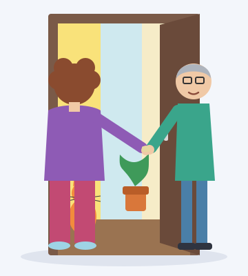

Übung 1: Die lieben NachbarnAscultă înregistrarea și bifează propozițiile corecte. Poți reasculta oricând. Propoziția din primul grup care e deja bifată este exemplul. Atenție: fiecare bifă la o propoziție falsă scade din punctaj.

Übung 2: DiktatAscultă fiecare înregistrare (poți reasculta de câte ori vrei) și scrie propoziția auzită. Înregistrările sunt în ordine, 1–6. Punctuația și majusculele nu contează la punctaj, dar sunt semnalate la verificare.
Übung 3: WohnträumeCitește textul și decide: sunt afirmațiile richtig (corecte) sau falsch (false)?